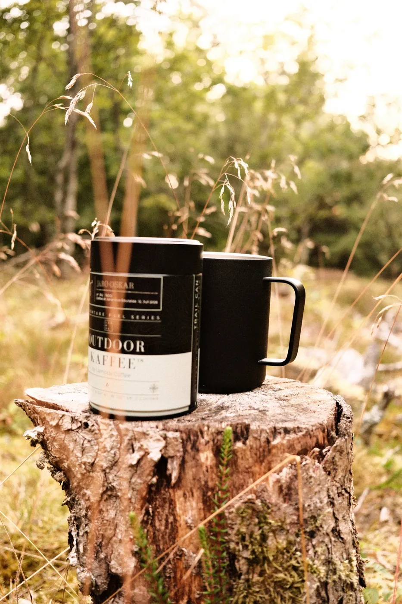
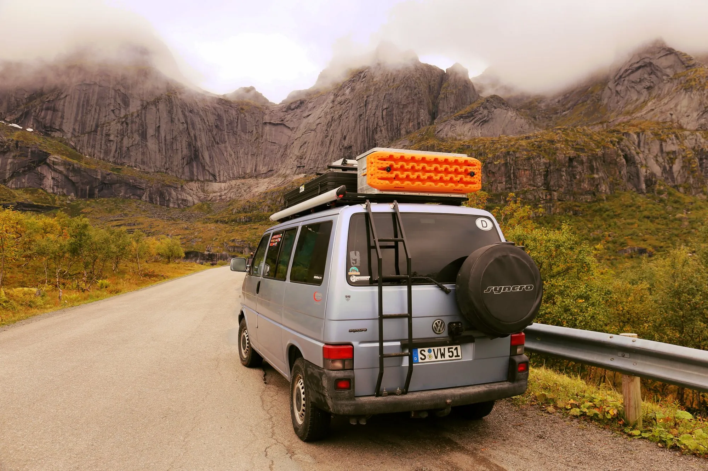
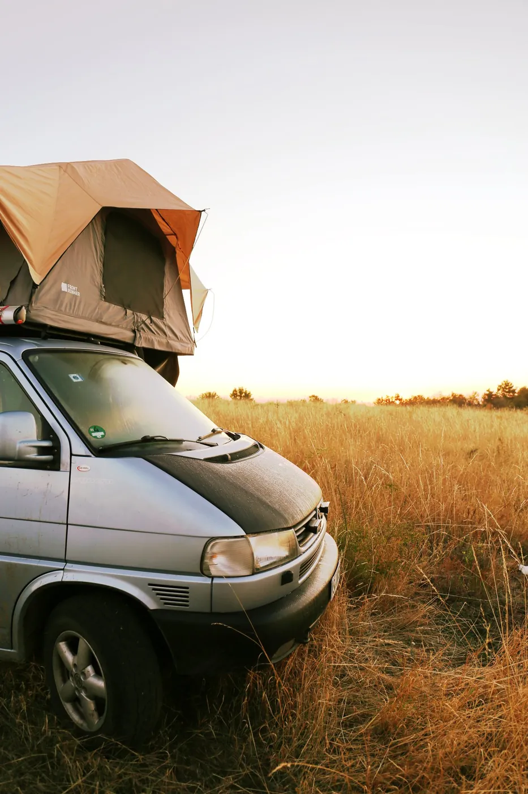
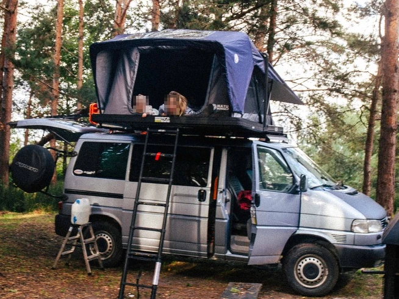
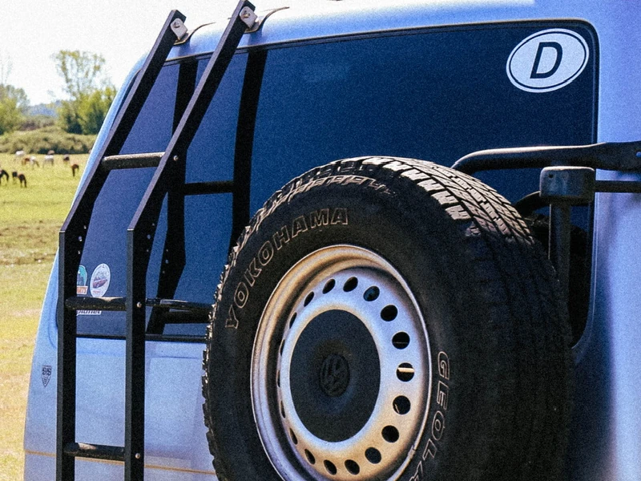
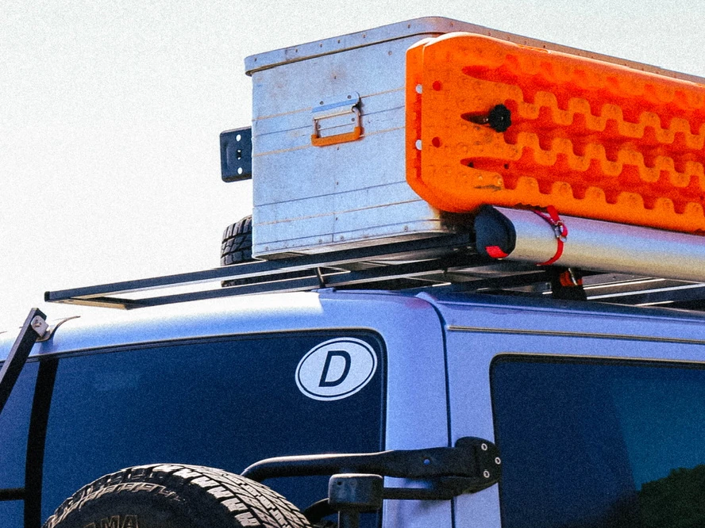
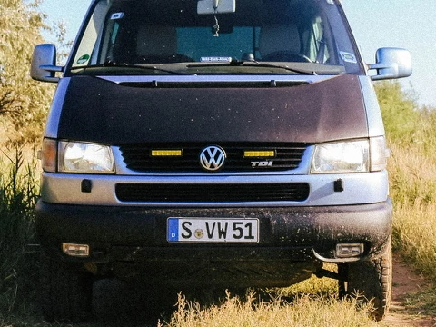
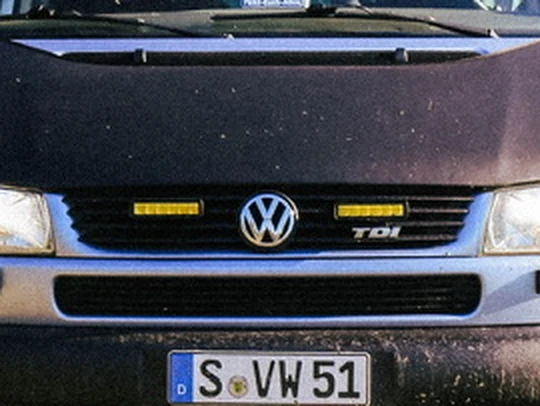
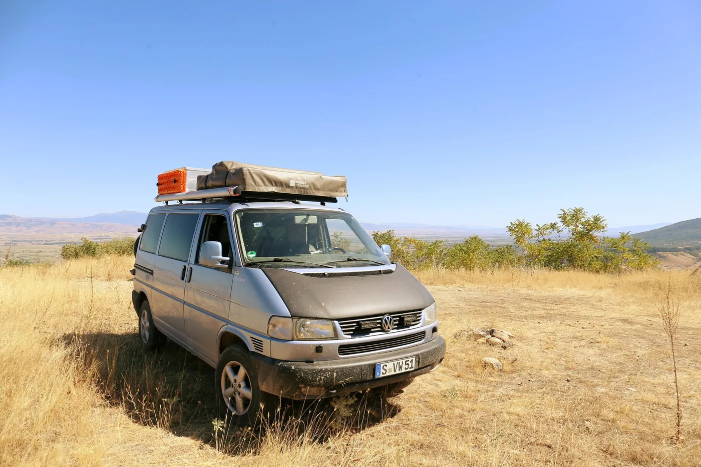

AnzeigeLambda Coffee
Outdoor-Kaffee und Ausrüstung für den perfekten Kaffee am Stellplatz. Die Dose passt in jede Bus-Schublade.
Zu Lambda Coffee
Ein VW T4 Syncro, ein Dachzelt und viel zu viele Schotterwege. Hier gibt’s den Bus, die Touren und die Dinge, die immer mitfahren.
Unsere Geschichte
Seit 2023 sind wir in der T4-Welt unterwegs. Der Name ist geblieben, der Bus nicht.
Unser erster T4 wollte unbedingt wie ein Syncro aussehen. War er aber nicht. Damit war @wannabesyncro geboren.
Irgendwann haben wir uns einen echten Syncro organisiert und ihn mit Freunden und Bekannten einmal komplett gerichtet.
Von Deutschland bis nach Moldawien, runter nach Griechenland, über Albanien durch Ex-Jugoslawien und wieder heim.
Die große Skandinavien-Tour, zum ersten Mal zu dritt: Unser kleiner, sehr lebhafter Sohn ist die perfekte Ergänzung für die Syncro-Familie.
Der Bus
Mit Freunden und Bekannten einmal komplett gerichtet. Aus dem Schrauben ist syncroland entstanden: Jede Teilenummer, die wir gesucht haben, landet jetzt in der Datenbank.

Diese Teile sind an unserem Syncro dran und haben sich auf den Touren bewährt. Keine Werbelinks, einfach unsere Empfehlung.

Hybrid-Dachzelt mit Alu-Hartschale, Liegefläche 140 × 210 cm für 2–3 Personen, inklusive Matratze und Teleskopleiter.
Zum Produkt
Rostfrei, nur ca. 6,5 kg und bis 110 kg belastbar. Montage ohne Bohren, handgefertigt in Deutschland.
Zum Produkt
Flaches Profil, ca. 38 kg, 150 kg dynamische und 400 kg statische Last – trägt auch ein Dachzelt.
Zum Produkt
Rund 30 mm mehr Bodenfreiheit, inklusive Teilegutachten für die Eintragung.
Zum Produkt
Licht-Shop für Zusatzscheinwerfer, LED-Leisten und Stirnlampen – für Nachtfahrten und das Camp.
Zum ProduktTouren
Brücken, Flussbetten, Pisten und viele Nächte im Dachzelt. Tipp auf ein Bild, um es groß zu sehen.
Unsere erste Tour mit dem Syncro: Deutschland, Moldawien, Griechenland, Albanien, Ex-Jugoslawien und zurück.
Die große Tour, zum ersten Mal zu dritt.
Fährt immer mit
Keine bezahlte Liste, sondern Zeug, das sich im Bus bewährt hat. Mit beiden Marken arbeite ich zusammen.

AnzeigeOutdoor-Kaffee und Ausrüstung für den perfekten Kaffee am Stellplatz. Die Dose passt in jede Bus-Schublade.
Zu Lambda CoffeeFeste Shampoo- und Duschstücke, plastikfrei und vegan. Nichts läuft aus, nichts nimmt Platz weg.
Zu DuschbrockenHinweis: Das sind Werbelinks. Kaufst du über den Duschbrocken-Link, bekomme ich eine kleine Provision. Für dich ändert sich am Preis nichts. Interesse an einer Kooperation? Schreib an ruben@syncroland.de.
